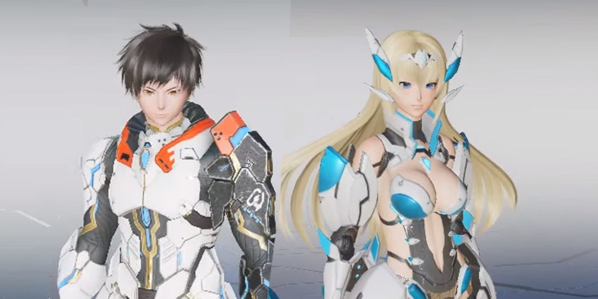
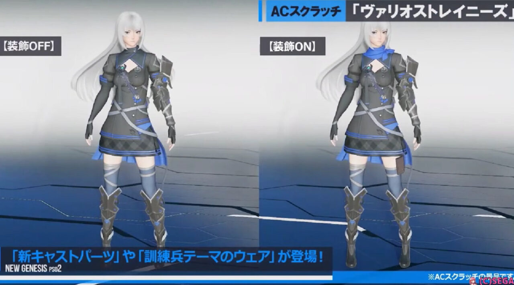

Arks são os bravos guerreiros que defendem o planeta halpha contra as misteriosas formas de vida conhecidas como DOLLS.
Existem alguns conhecidos como meteoros que freqüentemente pousam em halpha do espaço sideral através de vagens.

O que é PSO2 New Geneses ?
O último título da mais recente série de rpg online do Japão !
Crie seu próprio herói único com o personagem final
Personalizações de criação e leve-os em aventuras sem fim.
Ambientado em um campo aberto sem interrupções, uma variedade de novos sistemas, como corrida, deslizamento e jogo cooperativo de até 32 jogadores, conecta e expande este mundo de aventura, criando novos encontros e surpresas. Com controles simples e ação emocionante, você pode desfrutar do mais alto nível de combate rápido neste jogo online gratuitamente.


A história do pso2 New Genesis





Jogue de graça agora
Aproveite o combate, a história, a comunicação e muito mais gratuitamente, com a opção de pagar por avatar de luxo e itens de conveniência!